Loại
Lớp
6Lịch sử 6
-
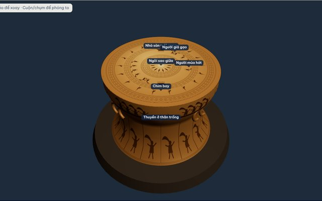
Mô hình 3D Lớp 6 · Bài 2 Dấu vết thời gian: Tư liệu hiện vật Trống đồng Ngọc Lũ 3D: xoay trống, soi từng vành hoa văn trên mặt trống – mái nhà cong, thuyền, người giã gạo, người múa hát. -
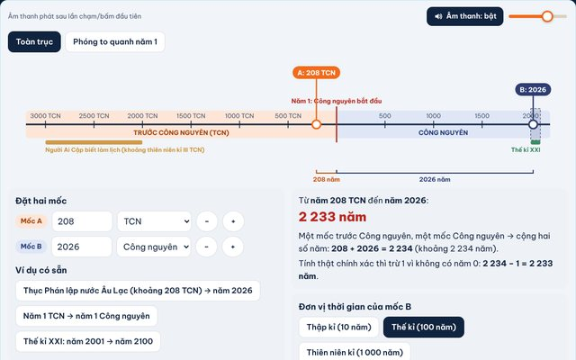
Trục thời gian Lớp 6 · Bài 3 Giải mã Công lịch Kéo hai mốc trên trục Công lịch để tính khoảng cách giữa năm trước Công nguyên và năm Công nguyên. -
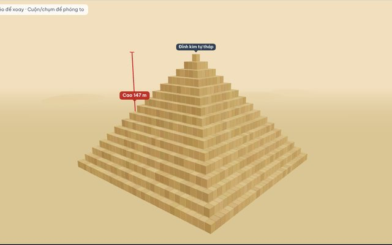
Mô hình 3D Lớp 6 · Bài 7 Kim tự tháp và những phát minh của Ai Cập, Lưỡng Hà Xoay mô hình 3D Kim tự tháp Kê-óp, bóc từng lớp đá để thấy các tảng đá xếp chồng không cần chất kết dính. -
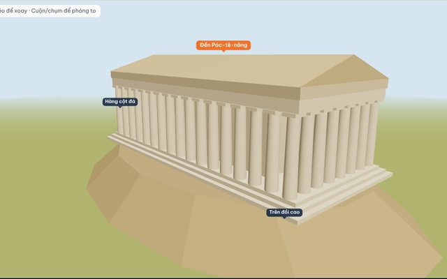
Mô hình 3D Lớp 6 · Bài 10 A-ten: Nơi nền dân chủ cổ đại toả sáng Đền Pác-tê-nông 3D trên đồi cao của A-ten, kèm sơ đồ bộ máy nhà nước A-ten và trò bỏ phiếu bằng vỏ sò. -
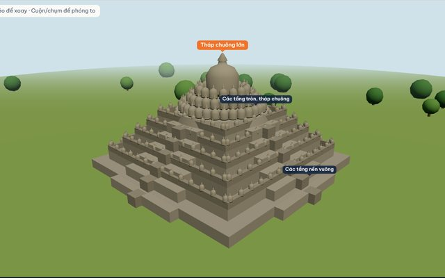
Mô hình 3D Lớp 6 · Bài 13 Kiến trúc – điêu khắc: Dấu ấn thời gian Đền Bô-rô-bu-đua 3D: kì quan Phật giáo xây dựng vào thế kỉ VIII – dựng từng tầng nền vuông, tầng tròn và các tháp chuông. -
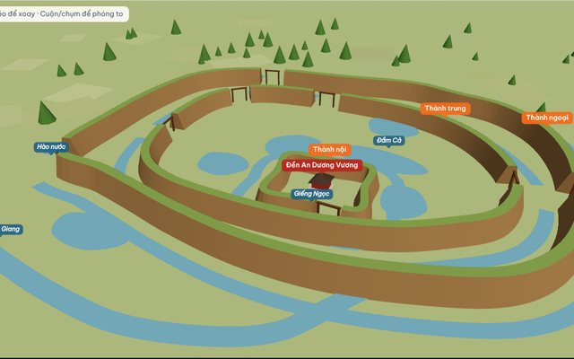
Mô hình 3D Lớp 6 · Bài 14 Bí ẩn thành Cổ Loa Mô hình 3D thành Cổ Loa xoay 360 độ: ba vòng thành xoáy trôn ốc, cổng thành và sông, ao hồ, đầm lầy bao quanh. -
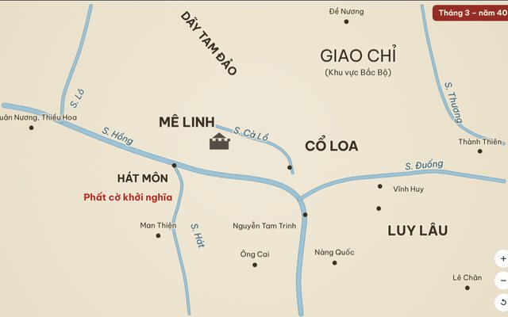
Sơ đồ trận đánh Lớp 6 · Bài 16 Hai Bà Trưng phất cờ khởi nghĩa Khởi nghĩa Hai Bà Trưng – Năm 40: sơ đồ diễn biến từng giai đoạn trên lược đồ, có hoạt hoạ mũi tên tiến công và âm thanh trận đánh. -
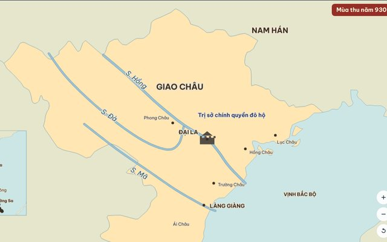
Sơ đồ trận đánh Lớp 6 · Bài 18 Dương Đình Nghệ và cuộc chiến bảo vệ nền tự chủ Dương Đình Nghệ chống quân Nam Hán – Năm 930 – 931: sơ đồ diễn biến từng giai đoạn trên lược đồ, có hoạt hoạ mũi tên tiến công và âm thanh trận đánh. -
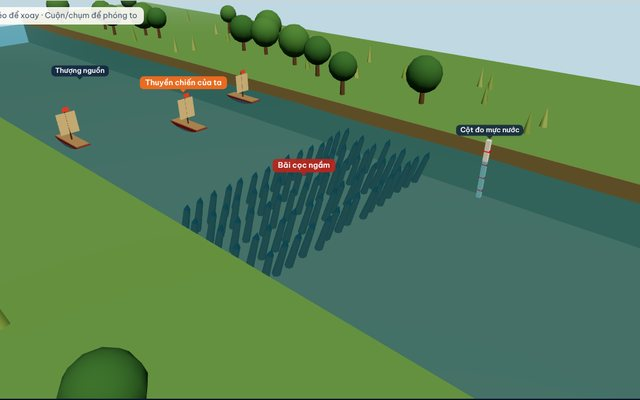
Mô hình 3D Lớp 6 · Bài 18 Thiên tài quân sự Ngô Quyền Bãi cọc Bạch Đằng 3D: kéo mực nước triều lên xuống để thấy cọc ngầm chìm rồi nhô lên, thuyền giặc mắc cọc khi triều rút. -
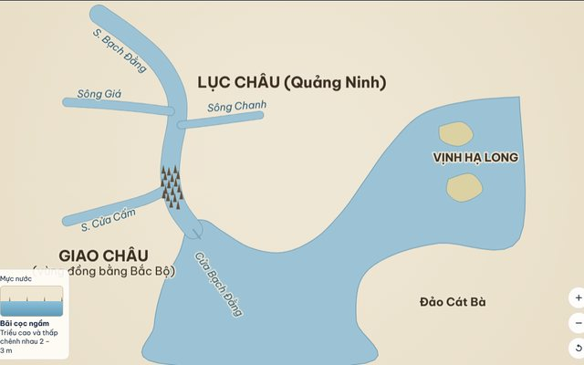
Sơ đồ trận đánh Lớp 6 · Bài 18 Chiến thắng Bạch Đằng: Bản hùng ca nghìn năm Hoạt hoạ trận Bạch Đằng năm 938: thuyền nhẹ giả thua dụ địch vào bãi cọc, nước triều rút, thuyền giặc mắc cọc.
7Lịch sử 7
-
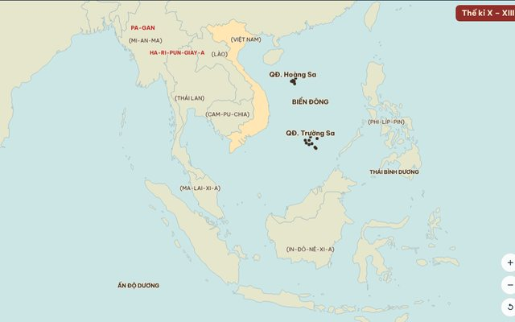
Bản đồ lịch sử Lớp 7 · Bài 6 Bản đồ Đông Nam Á: Những vương quốc trỗi dậy Đông Nam Á (thế kỉ X – XVI) – Các vương quốc phong kiến: bản đồ động theo từng giai đoạn, phóng to các vùng quan trọng. -
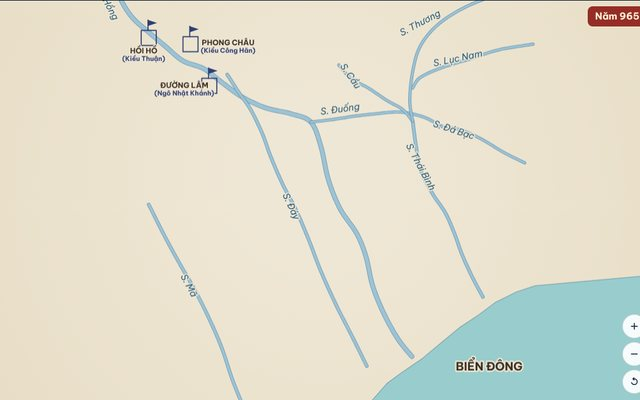
Sơ đồ trận đánh Lớp 7 · Bài 9 Đinh Bộ Lĩnh và hành trình thống nhất Dẹp loạn 12 sứ quân – Đinh Bộ Lĩnh thống nhất đất nước: sơ đồ diễn biến từng giai đoạn trên lược đồ, có hoạt hoạ mũi tên tiến công và âm thanh trận đánh. -
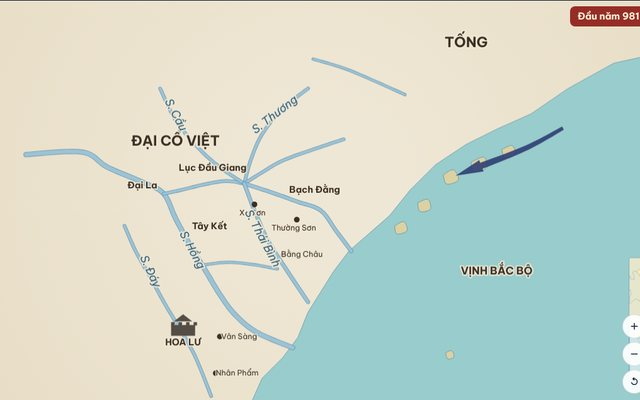
Sơ đồ trận đánh Lớp 7 · Bài 10 Lê Hoàn và chiến thắng Bạch Đằng vang dội Kháng chiến chống Tống năm 981 – Lê Hoàn trực tiếp lãnh đạo: sơ đồ diễn biến từng giai đoạn trên lược đồ, có hoạt hoạ mũi tên tiến công và âm thanh trận đánh. -
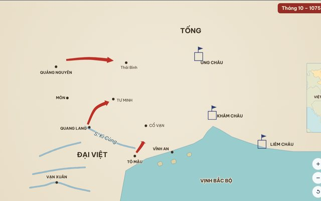
Sơ đồ trận đánh Lớp 7 · Bài 12 Tiên phát chế nhân: Đánh trước để tự vệ Tiến công trước để tự vệ (1075) – Lý Thường Kiệt chỉ huy hơn 10 vạn quân thuỷ, bộ: sơ đồ diễn biến từng giai đoạn trên lược đồ, có hoạt hoạ mũi tên tiến công và âm thanh trận đánh. -
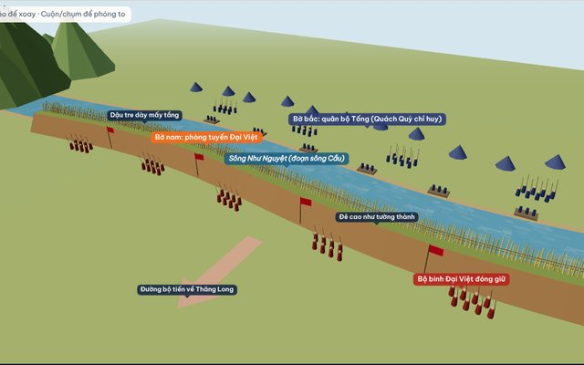
Mô hình 3D Lớp 7 · Bài 12 Phòng tuyến thép trên sông Như Nguyệt Mô hình 3D phòng tuyến sông Như Nguyệt: đê cao, dậu tre dày mấy tầng, bộ binh Đại Việt chặn quân Tống ở bờ bắc. -
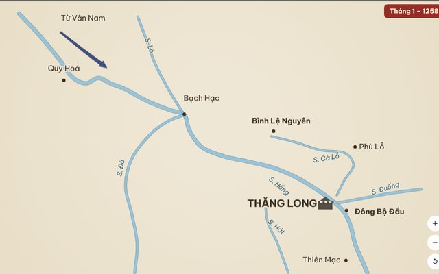
Sơ đồ trận đánh Lớp 7 · Bài 14 Vườn không nhà trống: Chiến thuật huyền thoại Lược đồ động kháng chiến năm 1258: quân Mông Cổ tiến vào Thăng Long, quân Trần tạm rút lui bảo toàn lực lượng, rồi tấn công quyết định ở Đông Bộ Đầu. -
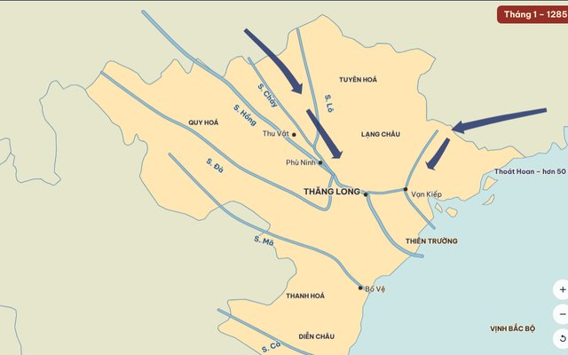
Sơ đồ trận đánh Lớp 7 · Bài 14 Hào khí Đông A và kháng chiến năm 1285 Kháng chiến năm 1285 – Chống quân xâm lược Nguyên: sơ đồ diễn biến từng giai đoạn trên lược đồ, có hoạt hoạ mũi tên tiến công và âm thanh trận đánh. -
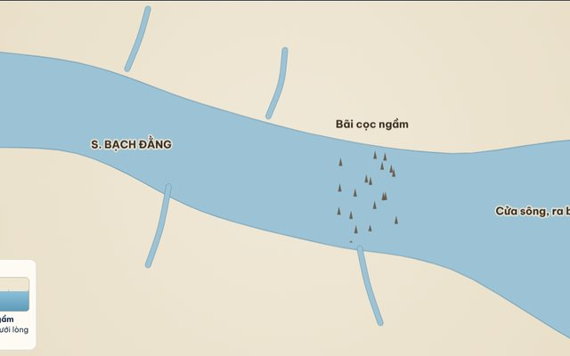
Sơ đồ trận đánh Lớp 7 · Bài 14 Bạch Đằng 1288: Bản hùng ca trên sông Mô phỏng trận địa bãi cọc Bạch Đằng năm 1288: nước triều lên xuống, thuyền giặc mắc kẹt và kế hoả công. -
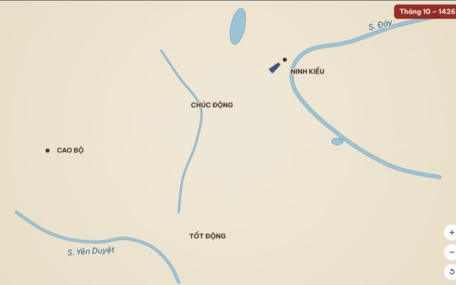
Sơ đồ trận đánh Lớp 7 · Bài 16 Chiến thắng vang dội: Tốt Động - Chúc Động Trận Tốt Động – Chúc Động – Ngày 7 – 11 – 1426: sơ đồ diễn biến từng giai đoạn trên lược đồ, có hoạt hoạ mũi tên tiến công và âm thanh trận đánh. -
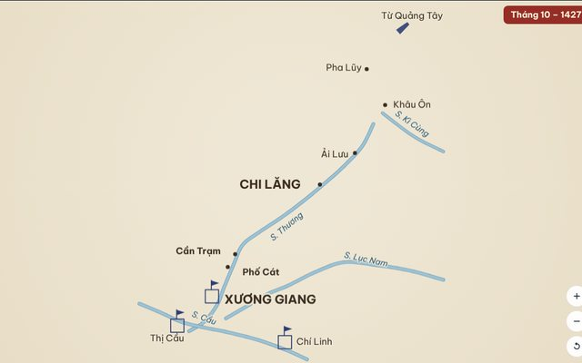
Sơ đồ trận đánh Lớp 7 · Bài 16 Chi Lăng – Xương Giang và Hội thề Đông Quan Bản đồ động trận Chi Lăng – Xương Giang (1427): hướng tiến của viện binh Minh và các điểm phục kích của nghĩa quân. -
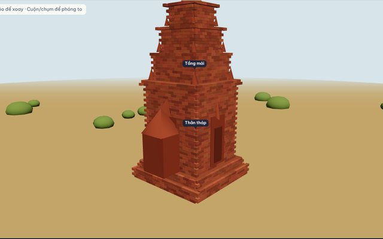
Mô hình 3D Lớp 7 · Bài 18 Bí ẩn những ngôi tháp Chăm nghìn năm Tháp Chăm 3D: xếp từng lớp gạch nung để dựng tháp, tách lớp để thấy các viên gạch gắn kết không dùng vữa. -
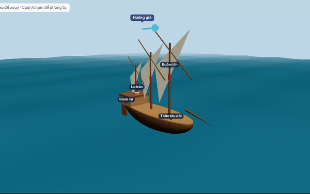
Mô hình 3D Lớp 7 · Chủ đề chung 1 C. Cô-lôm-bô và hành trình tìm ra châu Mỹ Tàu Ca-ra-ven 3D: tàu dài có bánh lái và hệ thống buồm lớn; đổi hướng gió để xem buồm và bánh lái giúp tàu vượt đại dương. -
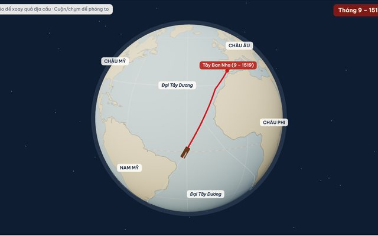
Mô hình 3D Lớp 7 · Chủ đề chung 1 Chuyến đi vòng quanh thế giới của Ph. Ma-gien-lăng Theo dấu đoàn tàu Ph. Ma-gien-lăng đi vòng quanh Trái Đất trên quả địa cầu 3D, với các điểm dừng chân quan trọng.
8Lịch sử 8
-
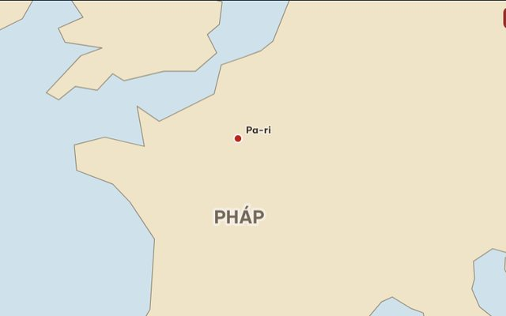
Trục thời gian Lớp 8 · Bài 2 Ngày 14/7: Khi pháo đài Ba-xti sụp đổ Bản đồ tương tác: sự kiện ở Pa-ri ngày 14 – 7 – 1789 và các mốc chuyển biến từ quân chủ lập hiến sang cộng hoà. -
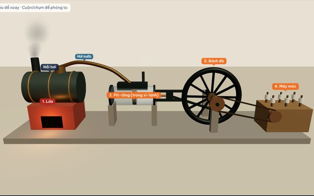
Mô hình 3D Lớp 8 · Bài 3 Giêm Oát và phát minh làm thay đổi thế giới Mô phỏng 3D pít-tông máy hơi nước làm quay bánh đà, và nhà máy “dời” từ ven sông vào trung tâm thành phố. -
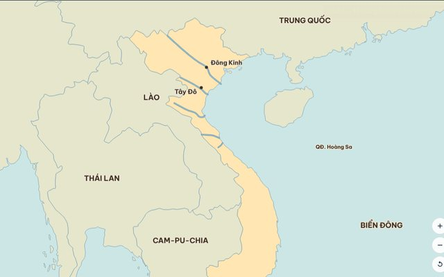
Bản đồ lịch sử Lớp 8 · Bài 5 Chiến tranh Nam – Bắc triều Xung đột Nam – Bắc triều – 1533 – 1592: bản đồ động theo từng giai đoạn, phóng to các vùng quan trọng. -
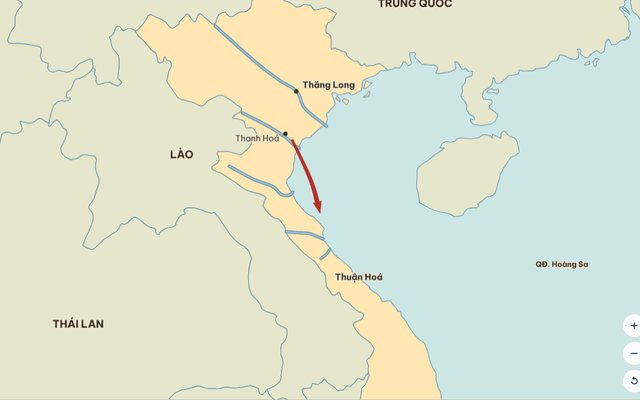
Bản đồ lịch sử Lớp 8 · Bài 5 Trịnh – Nguyễn phân tranh: Sông Gianh chia cắt Xung đột Trịnh – Nguyễn – 1627 – 1672: bản đồ động theo từng giai đoạn, phóng to các vùng quan trọng. -
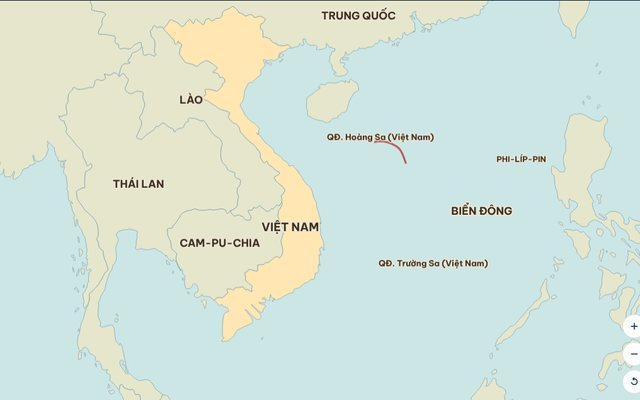
Bản đồ lịch sử Lớp 8 · Bài 6 Chủ quyền biển đảo từ xa xưa Biển đảo thời các chúa Nguyễn – Thế kỉ XVII – XVIII: bản đồ động theo từng giai đoạn, phóng to các vùng quan trọng. -
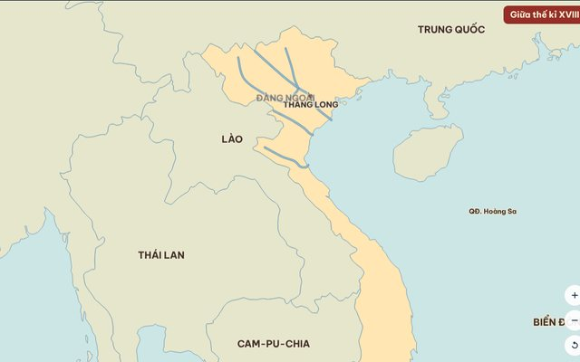
Bản đồ lịch sử Lớp 8 · Bài 7 Những thủ lĩnh áo vải lừng danh Phong trào nông dân Đàng Ngoài – Giữa thế kỉ XVIII: bản đồ động theo từng giai đoạn, phóng to các vùng quan trọng. -
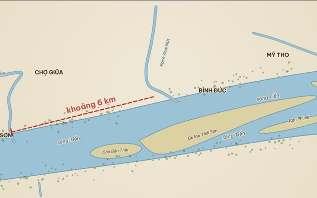
Sơ đồ trận đánh Lớp 8 · Bài 8 Trận thuỷ chiến Rạch Gầm – Xoài Mút Bản đồ động trận Rạch Gầm – Xoài Mút: quân Xiêm tiến vào, quân Tây Sơn mai phục hai bên bờ và dùng thuyền, bè lửa tấn công. -
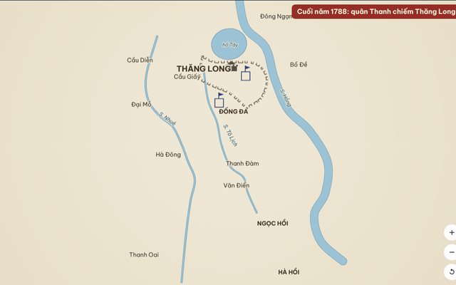
Sơ đồ trận đánh Lớp 8 · Bài 8 Đại phá quân Thanh: 5 ngày thần tốc Sơ đồ mũi tên tiến công của quân Tây Sơn ra Thăng Long: các mũi đánh vào đồn Hà Hồi, Ngọc Hồi, Đống Đa (Tết 1789). -
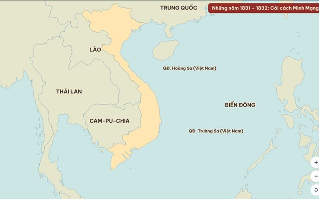
Bản đồ lịch sử Lớp 8 · Bài 16 Cải cách Minh Mạng: Đỉnh cao quyền lực Việt Nam thời Nguyễn – 30 tỉnh và 1 phủ (Thừa Thiên): bản đồ động theo từng giai đoạn, phóng to các vùng quan trọng. -
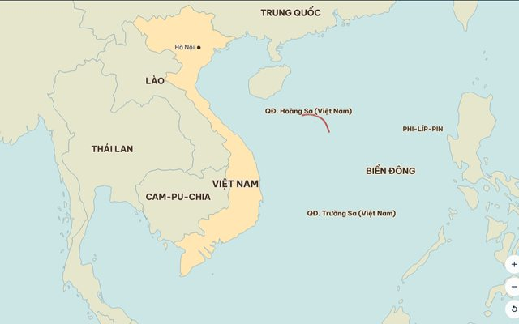
Bản đồ lịch sử Lớp 8 · Bài 16 Khẳng định chủ quyền biển đảo Hoàng Sa – Trường Sa thời Nguyễn – Thực thi chủ quyền: bản đồ động theo từng giai đoạn, phóng to các vùng quan trọng. -
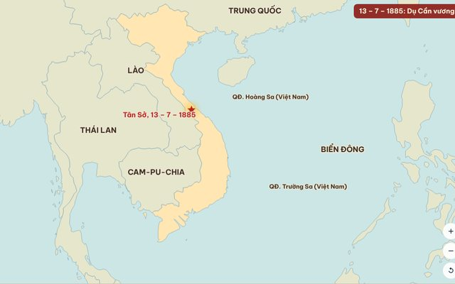
Bản đồ lịch sử Lớp 8 · Bài 18 Hương Khê - Ngọn cờ đầu phong trào Cần vương Phong trào Cần vương – 1885 – 1896: bản đồ động theo từng giai đoạn, phóng to các vùng quan trọng. -
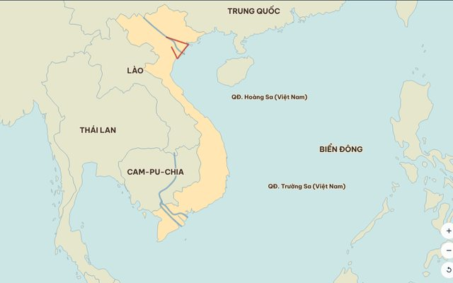
Bản đồ lịch sử Lớp 8 · Chủ đề chung 1 Hai dòng sông mẹ của Việt Nam Hai châu thổ lớn – Sông Hồng – sông Cửu Long: bản đồ động theo từng giai đoạn, phóng to các vùng quan trọng. -
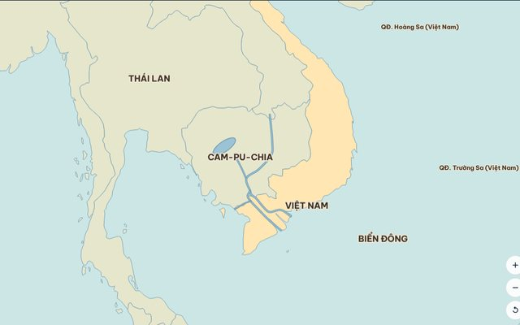
Bản đồ lịch sử Lớp 8 · Chủ đề chung 1 Sông Cửu Long: Sống chung với lũ Châu thổ sông Cửu Long – Sông nước – mùa lũ – kênh đào: bản đồ động theo từng giai đoạn, phóng to các vùng quan trọng. -
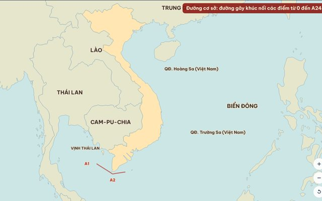
Bản đồ lịch sử Lớp 8 · Chủ đề chung 2 Giải mã đường cơ sở và vịnh Bắc Bộ Đường cơ sở – vịnh Bắc Bộ – Theo Bảng 2.1, 2.2 SGK: bản đồ động theo từng giai đoạn, phóng to các vùng quan trọng.
9Lịch sử 9
-
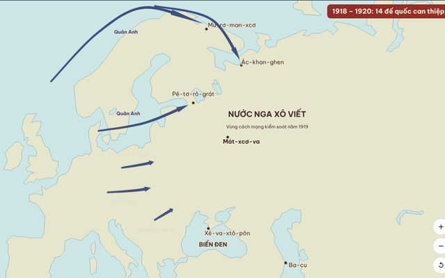
Bản đồ lịch sử Lớp 9 · Bài 1 Nước Nga Xô viết: Thử thách sinh tử Nước Nga Xô viết (1918 – 1920) – Chống thù trong, giặc ngoài: bản đồ động theo từng giai đoạn, phóng to các vùng quan trọng. -
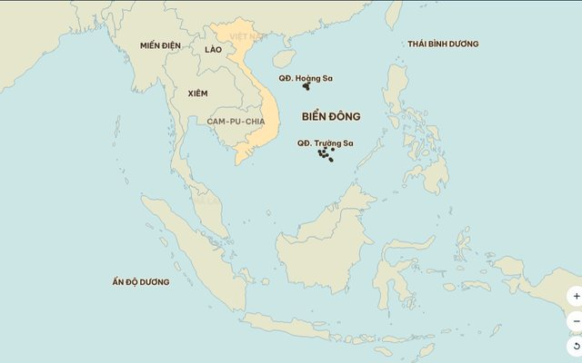
Bản đồ lịch sử Lớp 9 · Bài 3 Đông Nam Á: Cuộc đấu tranh bền bỉ Đông Nam Á (1918 – 1945) – Đấu tranh giành độc lập dân tộc: bản đồ động theo từng giai đoạn, phóng to các vùng quan trọng. -
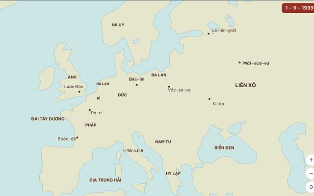
Bản đồ lịch sử Lớp 9 · Bài 4 Từ Ba Lan đến Mát-xcơ-va: Chiến tranh lan rộng Quân Đức đánh chiếm châu Âu – Giai đoạn I (1939 – 1941): bản đồ động theo từng giai đoạn, phóng to các vùng quan trọng. -
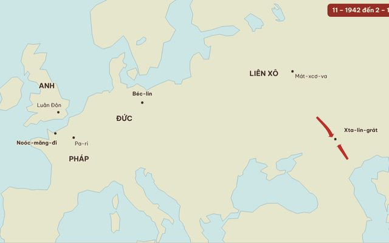
Trục thời gian Lớp 9 · Bài 4 Bước ngoặt Xta-lin-grát và ngày tàn của phát xít Kéo thả các sự kiện từ năm 1942 đến năm 1945 vào đúng thứ tự trên trục thời gian, rồi xem lược đồ minh hoạ. -
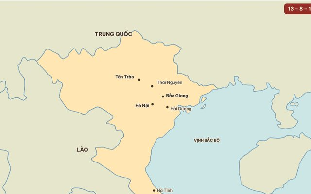
Trục thời gian Lớp 9 · Bài 8 Thời cơ ngàn năm có một Dòng thời gian tháng 8 – 1945: kéo theo từng ngày để thấy khởi nghĩa giành chính quyền ở các tỉnh lị trên bản đồ. -
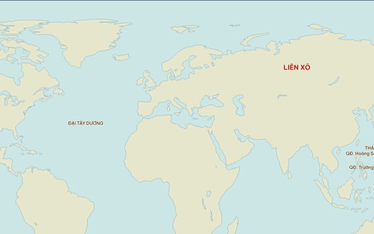
Bản đồ lịch sử Lớp 9 · Bài 9 Những 'đấu trường' đối đầu Chiến tranh lạnh (1947 – 1989) – Những khu vực đối đầu: bản đồ động theo từng giai đoạn, phóng to các vùng quan trọng. -
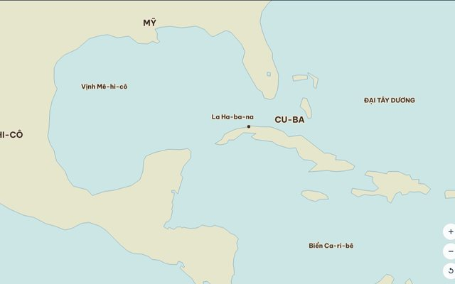
Bản đồ lịch sử Lớp 9 · Bài 12 Cu-ba: Hòn đảo tự do Cách mạng Cu-ba (1952 – 1959) – Diễn biến chính: bản đồ động theo từng giai đoạn, phóng to các vùng quan trọng. -
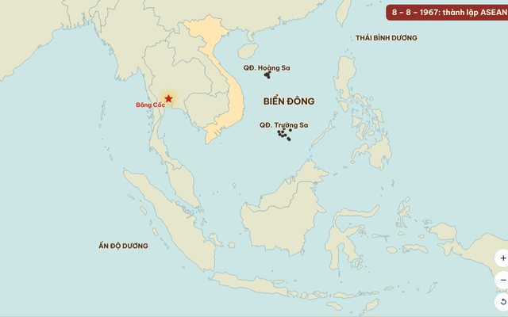
Bản đồ lịch sử Lớp 9 · Bài 12 ASEAN: Từ chia rẽ đến đồng thuận ASEAN – Hình thành và mở rộng: bản đồ động theo từng giai đoạn, phóng to các vùng quan trọng. -
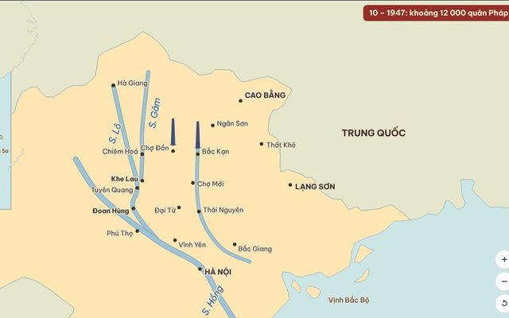
Sơ đồ trận đánh Lớp 9 · Bài 14 Giam chân địch ở đô thị và chiến thắng Việt Bắc Việt Bắc thu – đông 1947 – Tháng 10 – 12 – 1947: sơ đồ diễn biến từng giai đoạn trên lược đồ, có hoạt hoạ mũi tên tiến công và âm thanh trận đánh. -
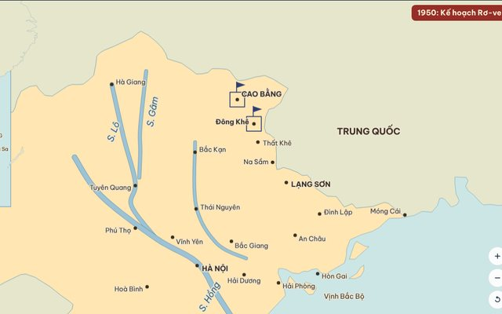
Sơ đồ trận đánh Lớp 9 · Bài 14 Chiến dịch Biên giới: Bước ngoặt lịch sử Biên giới thu – đông 1950 – Tháng 9 – 10 – 1950: sơ đồ diễn biến từng giai đoạn trên lược đồ, có hoạt hoạ mũi tên tiến công và âm thanh trận đánh. -
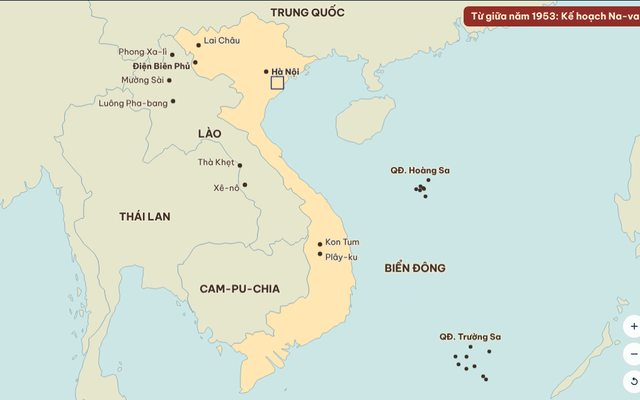
Sơ đồ trận đánh Lớp 9 · Bài 15 Kế hoạch Na-va và chiến cuộc Đông - Xuân Đông – Xuân 1953 – 1954 – Phá sản bước đầu Kế hoạch Na-va: sơ đồ diễn biến từng giai đoạn trên lược đồ, có hoạt hoạ mũi tên tiến công và âm thanh trận đánh. -
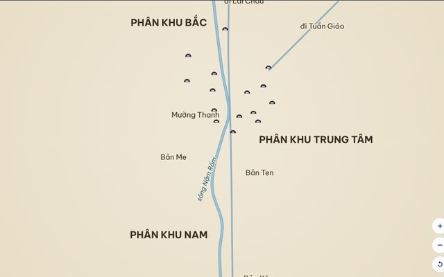
Sơ đồ trận đánh Lớp 9 · Bài 15 Điện Biên Phủ - Lừng lẫy năm châu Mô phỏng 3 đợt tấn công trên sơ đồ chiến dịch Điện Biên Phủ, nhấn mạnh việc kiểm soát sân bay Mường Thanh. -
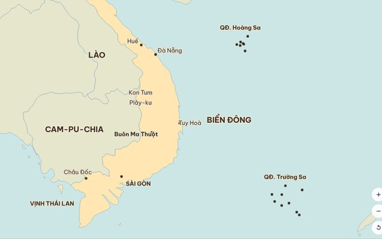
Sơ đồ trận đánh Lớp 9 · Bài 17 Đại thắng mùa Xuân 1975 Lược đồ động ba chiến dịch lớn của cuộc Tổng tiến công và nổi dậy Xuân 1975 tiến về Sài Gòn. - Bản đồ lịch sử Lớp 9 · Bài 20 Giữ vững biên cương Bảo vệ biên giới (1975 – 1989) – Biên giới Tây Nam và biên giới phía Bắc: bản đồ động theo từng giai đoạn, phóng to các vùng quan trọng.
- Bản đồ lịch sử Lớp 9 · Bài 20 Biển đảo là máu thịt Biển đảo Việt Nam – Chủ quyền biển đảo: bản đồ động theo từng giai đoạn, phóng to các vùng quan trọng.
Chưa có mô phỏng nào khớp bộ lọc.